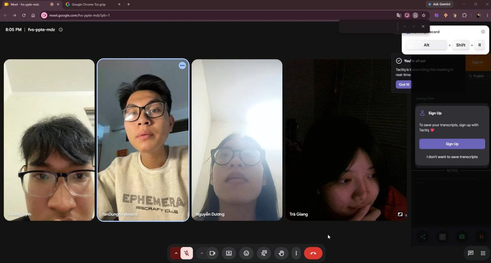
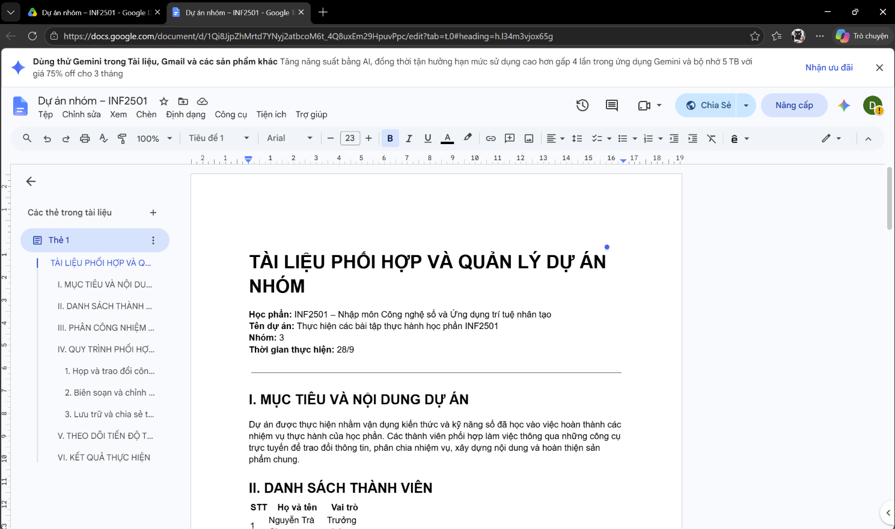
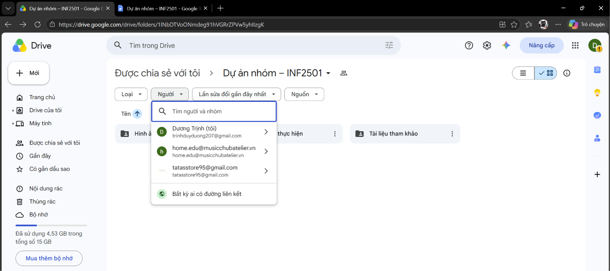

BÀI TẬP 4
SỬ DỤNG CÔNG CỤ HỢP TÁC TRỰC TUYẾN CHO DỰ ÁN NHÓM
Học phần: INF2501 – Nhập môn Công nghệ số và Ứng dụng trí tuệ nhân tạo
Sinh viên báo cáo: Trịnh Duy Dương | Ngành: Sư phạm Âm nhạc | Nhóm: 3
Chủ đề dự án: Thực hiện các bài tập thực hành học phần INF2501S
Thời gian thực hiện ghi trong tài liệu nhóm: 28/9/2026
1. Mục tiêu và giới thiệu dự án
Dự án hướng tới vận dụng các kỹ năng công nghệ số vào việc hoàn thành các bài tập thực hành của học phần INF2501. Thay vì làm việc riêng lẻ, nhóm tổ chức trao đổi qua nền tảng trực tuyến, phân chia nhiệm vụ theo năng lực và cùng hoàn thiện sản phẩm chung. Đối với sinh viên Sư phạm Âm nhạc, cách phối hợp này cũng có ý nghĩa thực tiễn khi chuẩn bị giáo án, học liệu và hoạt động chuyên môn theo nhóm.
2. Thành viên và trách nhiệm
| STT | Họ và tên | Vai trò | Nhiệm vụ theo tài liệu nhóm |
|---|---|---|---|
| 1 | Nguyễn Trà Giang | Trưởng nhóm | Điều phối hoạt động, tổng hợp và kiểm tra nội dung chung |
| 2 | Trịnh Duy Dương | Thành viên | Tìm kiếm, thu thập và chọn lọc tài liệu tham khảo |
| 3 | Nguyễn Tấn Dũng | Thành viên | Xây dựng nội dung và thực hiện các nhiệm vụ được giao |
| 4 | Nguyễn Ánh Dương | Thành viên | Thiết kế, trình bày và hoàn thiện sản phẩm |
3. Các công cụ hợp tác trực tuyến được sử dụng
3.1. Google Meet – họp và trao đổi
Nhóm sử dụng Google Meet để tổ chức các buổi họp trực tuyến. Nội dung trao đổi bao gồm:
Thống nhất yêu cầu và mục tiêu của dự án.
Đóng góp ý tưởng và lựa chọn phương án thực hiện.
Phân chia nhiệm vụ cho từng thành viên.
Trao đổi những vấn đề phát sinh và cập nhật tiến độ.
Thống nhất nội dung trước khi hoàn thiện sản phẩm.
3.2. Google Docs – biên soạn và chỉnh sửa chung
Nhóm sử dụng Google Docs làm không gian biên soạn nội dung chung:
Tạo tài liệu trực tuyến để các thành viên cùng tham gia.
Bổ sung nội dung theo nhiệm vụ đã được phân công.
Chỉnh sửa, rà soát và thống nhất cách trình bày.
Sử dụng tính năng nhận xét để đóng góp ý kiến khi cần thiết.
3.3. Google Drive – lưu trữ và chia sẻ
Google Drive được sử dụng để quản lý và lưu trữ các tài liệu của dự án. Nhóm thống nhất sắp xếp tài liệu theo các thư mục:
1.Tài liệu tham khảo.
2. Nội dung thực hiện.
4.Hình ảnh minh chứng.
3. Sản phẩm hoàn thiện.
Các thành viên được chia sẻ quyền truy cập phù hợp để thuận tiện trong quá trình sử dụng và cập nhật tài liệu.
4. Quá trình tổ chức và phối hợp nhóm
4.1. Chuẩn bị
Nhóm xác định mục tiêu thực hiện bài tập thực hành INF2501, phân công người điều phối, người tìm tài liệu, người phát triển nội dung và người thiết kế sản phẩm. Tài liệu nhóm ghi ngày thực hiện 28/9/2026.
4.2. Nội dung trao đổi
Các nội dung phối hợp gồm: thống nhất yêu cầu và mục tiêu, đóng góp ý tưởng, lựa chọn phương án, phân chia nhiệm vụ, cập nhật tiến độ, xử lý vấn đề phát sinh và rà soát nội dung trước khi hoàn thiện.
4.3. Quy trình thực hiện
Giai đoạn 1 – Thống nhất: trao đổi mục tiêu và chia nhiệm vụ.
Giai đoạn 2 – Triển khai: các thành viên thực hiện phần việc, phối hợp trên Google Docs và lưu tệp trên Drive.
Giai đoạn 3 – Rà soát: nhóm kiểm tra, góp ý và hoàn thiện sản phẩm chung.
5. Bảng quản lý nhiệm vụ và theo dõi tiến độ
| Công việc | Người phụ trách | Minh chứng / kết quả cần kiểm tra |
|---|---|---|
| Thống nhất nội dung dự án | Cả nhóm | Tài liệu kế hoạch, nội dung trao đổi |
| Tìm kiếm và chọn lọc tài liệu | Trịnh Duy Dương | Danh sách nguồn tài liệu |
| Xây dựng nội dung | Nguyễn Tấn Dũng, Trịnh Duy Dương | Bản thảo nội dung chung |
| Thiết kế và trình bày | Nguyễn Ánh Dương, Nguyễn Trà Giang | Bản trình bày/sản phẩm |
| Kiểm tra và hoàn thiện | Cả nhóm | Sản phẩm cuối và góp ý |
6. Minh chứng sử dụng công cụ
Minh chứng 1 – Google Meet:

Minh chứng 2 – Google Docs: Dự án nhóm – INF2501 - Google Tài liệu 
Minh chứng 3 – Google Drive: https://drive.google.com/drive/folders/1lNbDTVoONmdeg91hVGRrZPVw5yhIIzgK?usp=sharing

7. Đánh giá hiệu quả và bài học kinh nghiệm
Qua tài liệu nhóm, cách tổ chức công việc có sự phân vai rõ ràng và kết hợp ba công cụ với chức năng khác nhau: Meet hỗ trợ trao đổi đồng thời, Docs hỗ trợ chỉnh sửa nội dung, Drive hỗ trợ quản lý tài liệu. Cách làm này tạo điều kiện để mỗi thành viên chịu trách nhiệm về phần việc của mình mà vẫn duy trì một sản phẩm chung.
Cần cải thiện/ lưu vết quá trình làm việc: nên ghi biên bản có ngày giờ, quyết định cụ thể, thời hạn của từng nhiệm vụ và ảnh minh chứng tiến độ. Khi đó việc đánh giá đóng góp của từng thành viên sẽ khách quan hơn.
8. Kết luận
Bài tập giúp tôi nhận thấy việc hợp tác trực tuyến không chỉ là tham gia một cuộc họp video mà còn bao gồm phân công, xây dựng tài liệu chung, chia sẻ thông tin và theo dõi kết quả.
Với vai trò tìm kiếm và chọn lọc tài liệu, tôi có cơ hội rèn luyện khả năng khai thác nguồn thông tin và phối hợp với các thành viên để hoàn thành mục tiêu của nhóm. Những kỹ năng này có thể tiếp tục áp dụng trong học tập và công việc giảng dạy âm nhạc sau này.